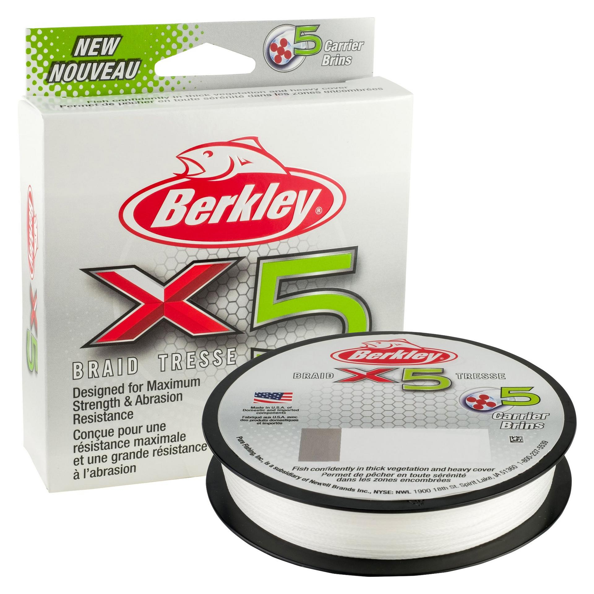

Berkley X5 Braid
Diameter chart, reel capacity & backing guide

Berkley X5 is a five-carrier PE braid marketed for fishing around cover. The selected pound test identifies a specific catalog entry, while its published diameter drives the capacity estimate. Use this page to plan a full braid spool or a working section above backing.
- Construction
- Five-carrier PE braid
- Listed strengths
- 8-80 lb
- Line type
- Braid main line
Is X5 Braid right for your setup?
X5 is worth considering for a braid main line when fishing around vegetation and cover. Choose the test for the lure, rod power and cover you expect to encounter. Lighter sizes still need a carefully matched reel and steady spooling tension; keep enough working braid for retying worn sections instead of using all spare spool space as backing.
How much X5 Braid will fit?
Calculated estimates, not measured fills. Stop at the reel manufacturer's fill level even if some line remains.
Berkley X5 Braid diameter chart
Strength and retail length are taken from US product options; diameters are matched using the same official product codes. Millimeter values are converted from the published inch diameter. Only resolved combinations are included.
| Strength | Inches | mm | Spools (yd) |
|---|---|---|---|
| 0.004 | 0.1016 | 164 | |
| 0.005 | 0.127 | 164, 328 | |
| 0.006 | 0.1524 | 164, 328 | |
| 0.007 | 0.1778 | 164, 328 | |
| 0.008 | 0.2032 | 164, 328 | |
| 0.010 | 0.254 | 164, 328 | |
| 0.012 | 0.3048 | 164, 328 | |
| 0.014 | 0.3556 | 164, 328 | |
| 0.016 | 0.4064 | 164, 274 |
Choosing your X5 Braid strength
The 8-15 lb entries are the lightest choices shown. Treat them as fine braid, not heavy-cover line simply because the X5 family is marketed for cover. Check the rod and intended presentation before deciding on a strength.
The 20-40 lb entries span different diameters for general and stronger braid setups. A baitcaster may be easier to manage with a less delicate diameter, but lure weight, cover, and spool behavior should decide the choice.
The 50-80 lb entries belong to heavier applications that justify them. More breaking strength does not automatically improve casting or make a light rod suitable for dense cover. The capacity tool shows fit, not a blanket fishing recommendation.
This is a specification-based setup guide, not a hands-on X5 Braid performance test.
Want a guided recommendation?
Continue in the Setup WizardSame pound test, different diameters
At your selected strength
Loading diameter comparisons...
What changes with another line?
Nearby diameters in the line database
| Line | Strength | Inches | Difference |
|---|---|---|---|
| Loading line database... | |||
Backing, working line & leaders
Choose a useful working length
Plan enough braid for your normal casts, expected runs, and a reserve for cutting back damaged line. Backing can make up the remaining spool space without buying braid for the entire spool.
Check the connection
Use a connection appropriate to the braid and backing diameters, seat it carefully, and keep it below the normal working section. A tight, bulky knot can affect how the first braid wraps lie.
Inspect after contact
A cover-oriented braid still needs inspection. Check for damage after rubbing vegetation stems, wood, or rough structure, and cut back compromised line instead of relying on the strength label.
How Much Fits on These Reels?
Estimated full-spool capacity for the X5 Braid strength selected above, with no backing. These are calculated examples, not physical tests or recommendations for every pairing.
Loading capacity estimates...
X5 Braid questions, answered
Is X5 a four-strand braid?
No. Berkley describes X5 as a five-carrier PE braid. It is a different construction from its nine-carrier X9 model.
Does X5 hold less line than X9 at the same pound test?
Use the listed diameters for the exact entries. Where two entries have the same diameter, the mathematical capacity estimate is the same; their construction or handling can still differ.
Can I put the whole 164-yard package on my reel?
Only if your selected reel has enough estimated space at that diameter. Use a capacity calculation first, and stop at the correct fill level. If the package does not fill the reel, the backing mode can estimate what is needed beneath it.
Specifications & sources
Specifications checked 2026-09-13. Only source-supported strength and package combinations are included. Official inch values are used for calculations. Check your own label when using older or imported stock. The product image identifies the model, not every selectable strength.
Calculations use the catalog's listed inch diameters. Published inch and millimeter values may differ slightly because of rounding.
- Official Berkley X5 Braid product specifications Manufacturer product identity, package options, or exact-SKU diameter evidence.
- Official Berkley X5 Braid bulk-spool specifications Manufacturer product identity, package options, or exact-SKU diameter evidence.
- Official Berkley X5 Braid diameter records Manufacturer product identity, package options, or exact-SKU diameter evidence.